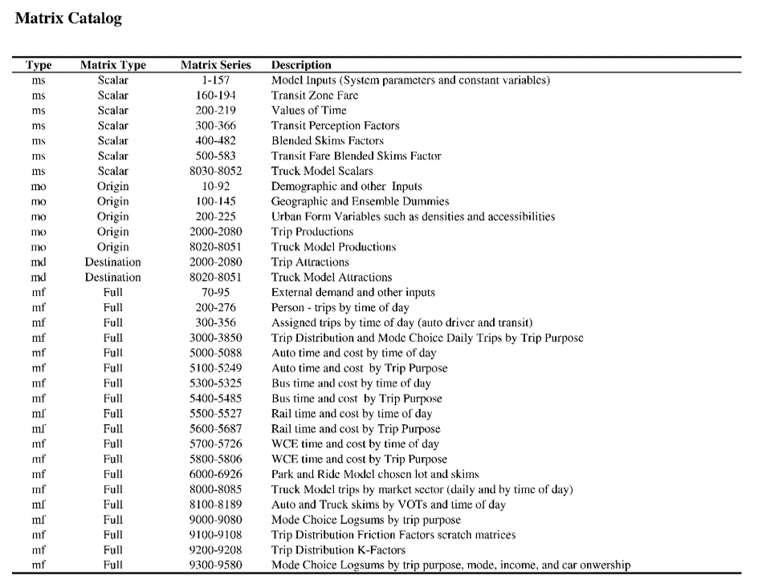

Data and Assumptions¶
In this section, you will find some useful infomation you may need to use in your RTM application project. Some of them are RTM assumptions and some of them are the calibrated factors. This document could be a dictionary of the model components.
Modes and Vehicles¶
This section shows the link and transit mode, and transit vehicle type
Link mode¶
| Mode | Description |
|---|---|
| v | Vehicles (Primary Auto Mode) |
| c | High Occupancy Vehicles (HOV) |
| d | Single Occupancy Vehicles (SOV) |
| x | Light Trucks |
| t | Heavy Trucks |
| n | Discourage Heavy Vehicle Traffic |
| b | Bus |
| p | Pedestrian |
| a | Auxillary Transit Access |
| l | SkyTrain |
| r | Commuter Rail (WCE) |
| s | SeaBus |
| h | Gondola |
Transit mode¶
| Mode | Description |
|---|---|
| b | Bus |
| l | SkyTrain |
| r | Commuter Rail (WCE) |
| s | SeaBus |
| g | BRT |
| f | LRT |
| h | Gondola |
Transit Vehicle Capacity and Cost¶
The table below gives a transit vehicle capacity and cost catalog. The value is used in the capacited transit assignment.
| Transit Vehicle | Mode | Fleet Size | Capacity(S/T) | OC($/h) | OC($/km) | Auto. equ |
|---|---|---|---|---|---|---|
| 1.Motor-Bus | b | 747 | 35/50 | 65 | 0.55 | 2.5 |
| 2.Trolley | b | 224 | 31/47 | 65 | 0.55 | 2.5 |
| 3.Blue-Bus | b | 48 | 31/47 | 65 | 0.55 | 2.5 |
| 4.Sea-Bus | s | 2 | 300/400 | 0 | 0 | 0 |
| 5.Sky-E | l | 999 | 88/287 | 0 | 3 | 0 |
| 6.pcl-bus | b | 20 | 50/50 | 30 | 0.55 | 2.5 |
| 7.Abbotsford | b | 12 | 48/60 | 30 | 0.55 | 2.5 |
| 8.Comrail-5 | r | 5 | 1500/1650 | 0 | 0 | 0 |
| 9.Chilliwack | b | 12 | 48/60 | 30 | 0.55 | 2.5 |
| 10.Mot-Artics | b | 42 | 48/90 | 65 | 0.55 | 3.75 |
| 11.Tro-Artics | b | 1 | 49/70 | 65 | 0.55 | 3.75 |
| 12.HwyCoach | b | 66 | 49/49 | 65 | 0.55 | 2.5 |
| 13.MiniBus | b | 40 | 20/24 | 65 | 0.55 | 2.5 |
| 14.Sky-M | l | 999 | 140/300 | 0 | 0 | 0 |
| 15.Sky-Sh | l | 999 | 150/350 | 0 | 0 | 0 |
| 16.BRT | g | 42 | 60/105 | 0 | 0 | 3.75 |
| 17.LRT | f | 1 | 160/300 | 0 | 3 | 0 |
| 18.Gondola | h | 20 | 28/35 | 0 | 0 | 0 |
| 20.Sky-ML2 | l | 999 | 127/218 | 0 | 0 | 0 |
| 31.EL-2017 | l | 999 | 174/424 | 0 | 3 | 0 |
| 32.EL-2030 | l | 999 | 143/509 | 0 | 3 | 0 |
| 33.EL-2045 | l | 999 | 143/509 | 0 | 3 | 0 |
| 34.ML-2017 | l | 999 | 66/222 | 0 | 3 | 0 |
| 35.ML-2030 | l | 999 | 132/444 | 0 | 3 | 0 |
| 35.ML-2030 | l | 999 | 132/444 | 0 | 3 | 0 |
| 36.ML-2045 | l | 999 | 132/444 | 0 | 3 | 0 |
| 37.CL-2017 | l | 999 | 88/288 | 0 | 3 | 0 |
| 38.CL-2030 | l | 999 | 88/288 | 0 | 3 | 0 |
| 39.CL-2045 | l | 999 | 110/360 | 0 | 3 | 0 |
Volume Delay Function¶
| VDF | Description | Expression |
|---|---|---|
| 11 | Centroid Connector | length x 60/40 |
| 12 | Bowen Island Service | 40 + (volume-100) x 60/volume x (volume>=100) |
| 13 | Highway Merge Lane | length x 60/posted_speed + 0.85 x (volume/(capacity x lanes))^5 |
| 14 | Stop Sign and Signal | signal_delay + length x 60/posted_speed + 0.85 x (volume/(capacity x lanes))^4 |
| 15 | Free Flow | length x 60/posted_speed x (1+0.6 x 0.85 x (volume/(capacity x lanes^1.05))^5) |
| 16 | Free Flow | length x 60/(posted_speed x 1.1) x (1+0.6 x 0.43 x (volume/(capacity x lanes^1.05))^5.25) |
Time of Assginment¶
The RTM model only handles 3 scenarios in each databank. Each scenario stores one-hour assignment result, and it is used to represent various periods throughout the day.
| Peak Period | Hour | Hours of the day represented |
|---|---|---|
| AM | 07:30 - 08:30 | 06:00 - 10:00 |
| MD | 12:00 - 13:00 | 10:00 - 15:00, 18:00 - 06:00 |
| PM | 16:30 - 17:30 | 15:00 - 18:00 |
Expansion Factor¶
The traffic expansion factor is to convert the model assigned hourly traffic volume to daily volume. The factor set has a generic set and categorized set. Both sets can be used according to the study purpose.
All Class¶
| AM | MD | PM |
|---|---|---|
| 3.68 | 9.20 | 3.11 |
By Category¶
| Class | AM | MD | PM |
|---|---|---|---|
| SOV | 3.44 | 8.41 | 3.95 |
| HOV | 1.51 | 8.58 | 5.32 |
| SOV+HOV | 3.22 | 8.63 | 4.05 |
| LGV | 3.59 | 5.63 | 6.17 |
| HGV | 4.88 | 5.43 | 6.36 |
| LGV+HGV | 3.83 | 5.81 | 6.63 |
Transit Ridership¶
The transit expansion factor converts the hourly transit ridership to daily value. Like auto traffic, the factor set is classed by different types of service. The value shows below. (*SeaBus has the same factor with Rail)
| Transit mode | AM | MD | PM |
|---|---|---|---|
| Bus | 2.54 | 9.44 | 2.57 |
| SkyTrain | 2.53 | 9.54 | 2.92 |
| WCE | 3.34 | - | 2.02 |
Annual Factor¶
The annual expansion factor is to expend the daily volume on typical fall weekday to yearly volume. The generic expansion factor, including all vehicle classes, is 333. And the factors for each class are shown below:
| Class | Factor |
|---|---|
| All Classes | 333 |
| Auto | 335 |
| LGV | 313 |
| HGV | 276 |
| Bus | 299 |
| Skytrain | 331 |
| WCE | 224 |
Transit Perception Factor¶
Transit perception is a factor that can reflect the user’s feeling about taking transit in each stage. It is used in the mode choice model. The values are cited from the literature with some minor adjustment based on local knowledge. Note that the boarding perception factor used for transfer boarding only. The model assumed there is no penalty for initial boarding. Current model only account perception impact for work purpose only.
| Bus/Rail/WCE | Time Component | Matrix | EMME Name | Value |
|---|---|---|---|---|
| Bus | In-vehicle | ms300 | busIVTprcpWk | 1.25 |
| -- | Wait | ms301 | busWAITprcpWk | 2.50 |
| -- | Walk | ms302 | busWALKprcpWk | 2.00 |
| -- | Boarding | ms303 | busBOARDSprcpWk | 10.00 |
| Rail | In-vehicle | ms310 | railIVTprcpWk | 1.00 |
| -- | Wait | ms311 | railWAITprcpWk | 2.50 |
| -- | Walk | ms312 | railWALKprcpWk | 2.00 |
| -- | Boarding | ms313 | railBOARDSprcpWk | 10.00 |
| WCE | In-vehicle | ms320 | wceIVTprcpWk | 1.00 |
| -- | Wait | ms321 | wceWAITprcpWk | 2.50 |
| -- | Walk | ms322 | wceWALKprcpWk | 2.00 |
| -- | Boarding | ms323 | wceBOARDSprcpWk | 10.00 |
Matrix¶
Over thousand matrices are used in the RTM simulation. Here is a list showing the matrices grouped by type and function:

For the full list, see matrix list page.
Ensembles¶
The ensemble is a useful tool to group the zones by different purposes, either for geographical mapping or model calculating. There are various ensembles in the RTM model. Some of them are under implementation. Some of them are historically used and not functional at this moment, but we keep them as a placeholder for future usage. Here is a list of ensembles that the latest RTM is using:

Download Ensemble_Index.pdf